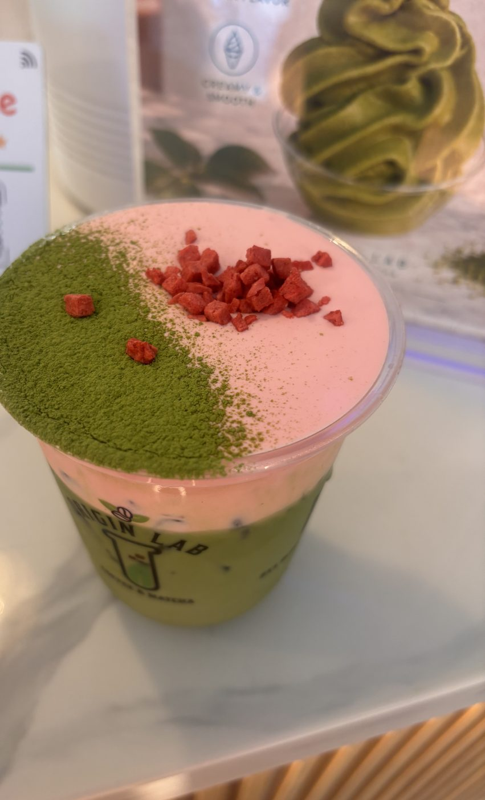
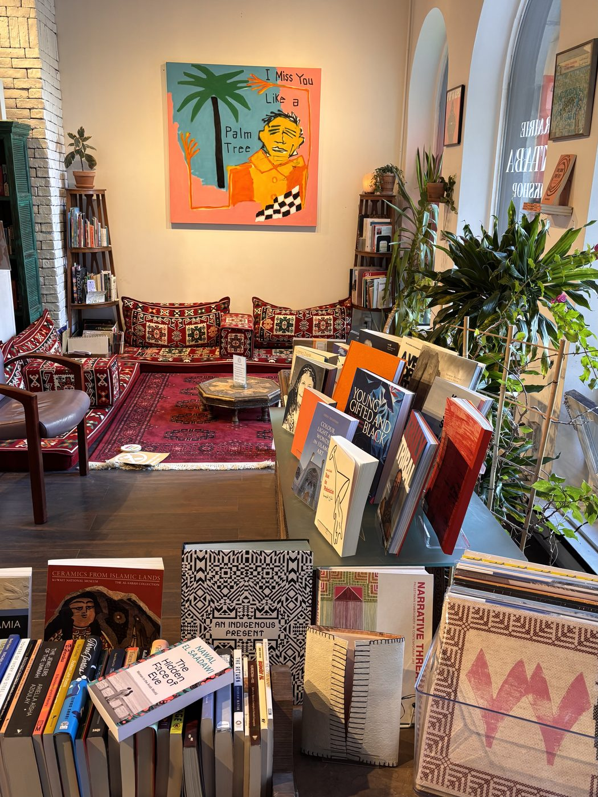

Expected May 2027
Master of Science in Applied Business Analytics
Boston University
I’m an analyst at Sephora Media Network and a graduate student in Applied Business Analytics at Boston University. I began in psychology and mathematics, then moved through store operations and product management. Today I work with data every day to show what is really driving performance.
I like to see a problem from every side: the stakeholder, the end user, and the business. And I care about amplifying the voice or the detail that is easy to overlook.
I’m also a word-puzzle person, which is why this site is built like a game. Here’s the reason.
Expected May 2027
Boston University
May 2024
Western Connecticut State University
My skills, set as a crossword. Every answer is a tool or method I use, and hovering over a clue lights up its word.
I’m drawn to retail media and campaign analytics, product management and customer experience, machine learning and predictive modeling, big data processing with Apache Spark, and data storytelling.
I’m always looking to advance my knowledge and combine business, research, and technical skills to help teams make better decisions, especially in retail, media, and consumer products. I want to build analysis that is accurate, clear, and centered on the client.
Away from the screen, you’ll find me with matcha, my cats, or a good book.

I love matcha, and this was one of my favorites!
My cats, Leite and Mabel!

My favorite bookshop in Montreal (I love to read).